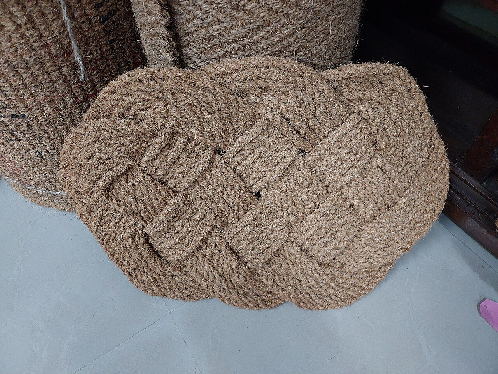
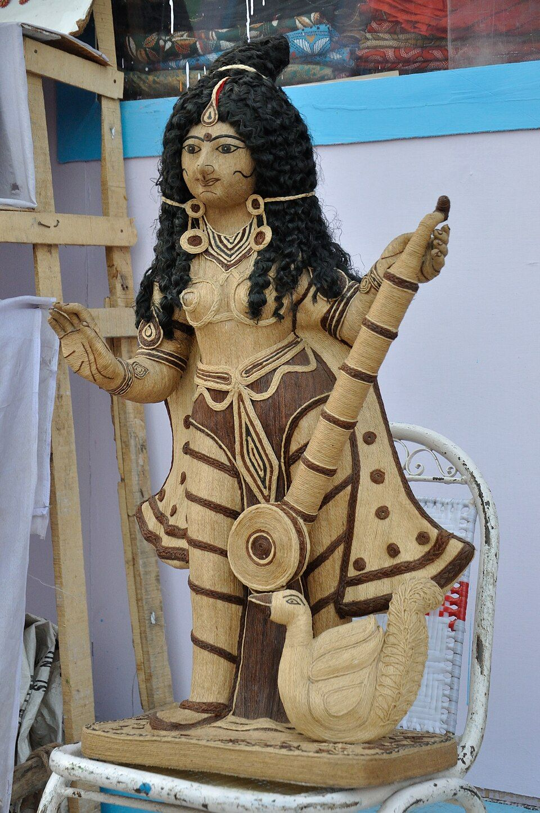
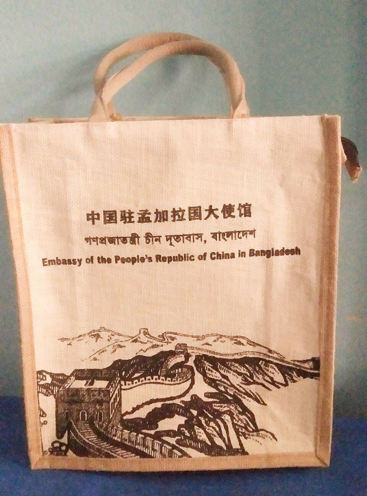
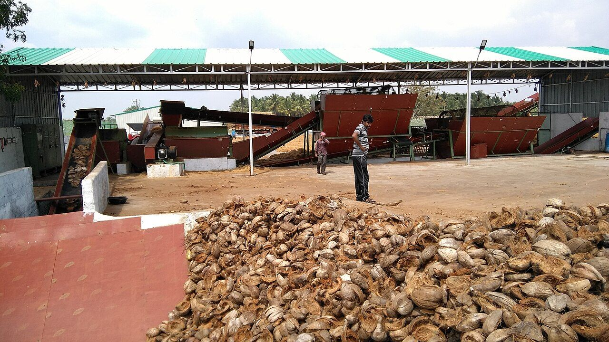
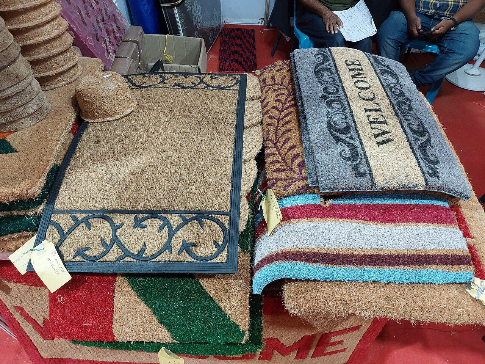
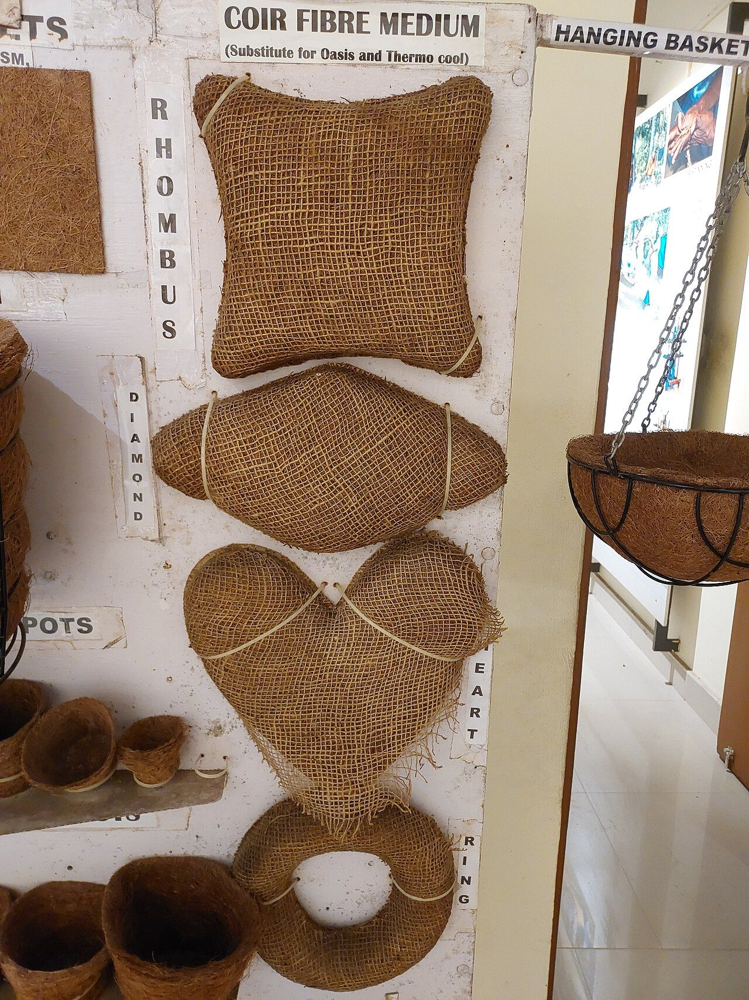
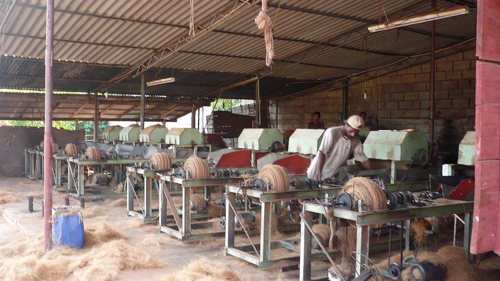
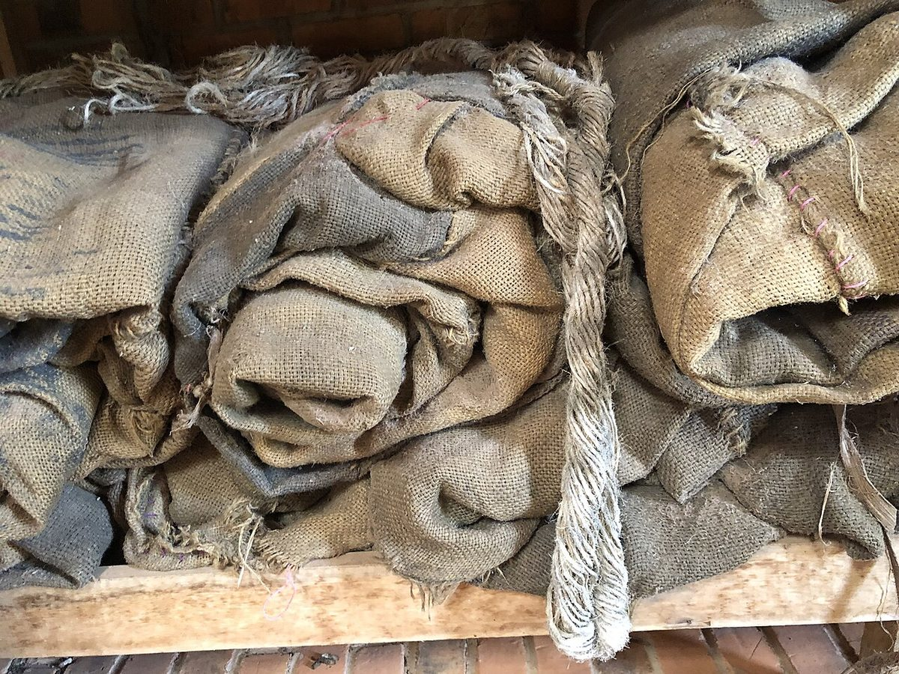
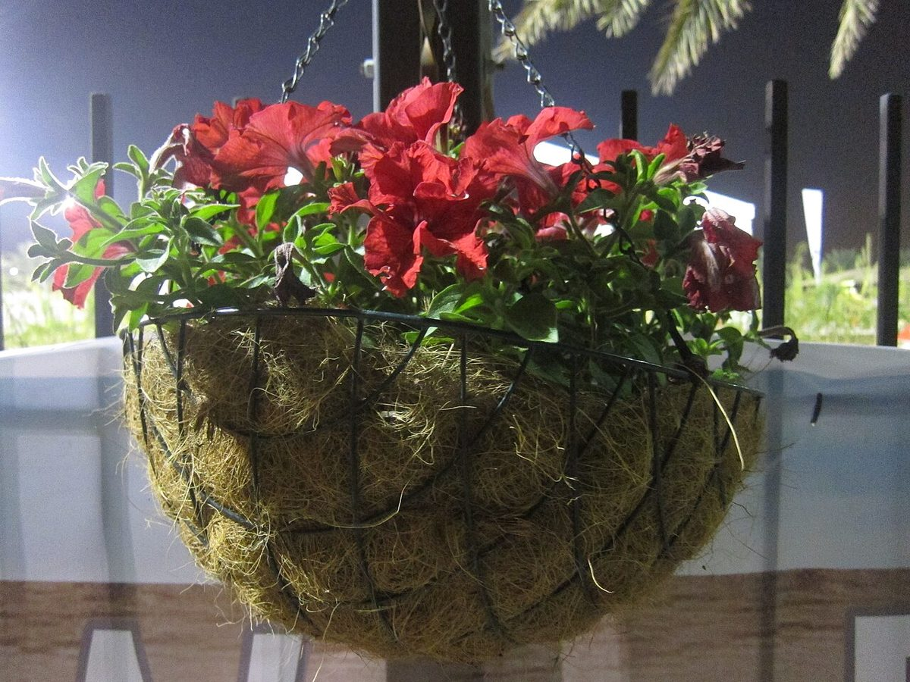

Entrance & home
Coir welcome mats
Doorway mats in natural-fibre textures and practical formats.
Ask about sizes →Browse our full collection of durable coconut coir door mats, woven jute area rugs, reusable tote bags, and hanging planters. Filter by category below to find exact dimensions and specifications.

Doorway mats in natural-fibre textures and practical formats.
Ask about sizes →
Woven natural textures for relaxed home interiors.
Ask about finishes →
Reusable carry and presentation formats for retail and gifting.
Discuss customisation →
Growing formats for horticulture and nursery use; specifications vary by construction.
Request product details →
Natural-fibre mats for selected landscaping and garden applications.
See geo-textile range →
Coir-based mattress products; construction and comfort profile are SKU-specific.
Enquire about options →
2-ply and 3-ply high-tensile coconut fibre string for agricultural trellising, nursery tying and industrial packaging.
Ask about ply & test values →
10oz and 14oz biodegradable hessian rolls for industrial sack craft, tree root balling, and rustic interior acoustic panelling.
Request roll specifications →
Pre-formed permeable coconut fibre hanging planters with natural latex binding for optimum root aeration and moisture retention.
Check basket dimensions →Before confirming an order, request the current specification for the exact product and batch.
| Detail | What to confirm |
|---|---|
| Dimensions | Length, width, thickness or roll size |
| Fibre | Composition and any blended materials |
| Construction | Weave, yarn, density and finish |
| Care / use | Cleaning, storage and intended environment |
| Technical data | SKU-specific test values and methods, if applicable |